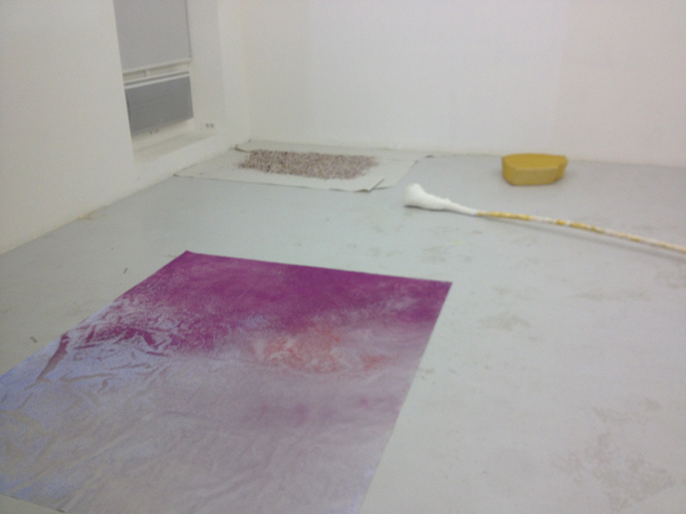
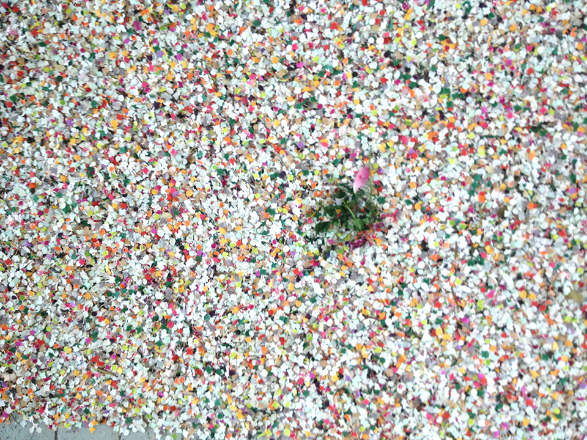
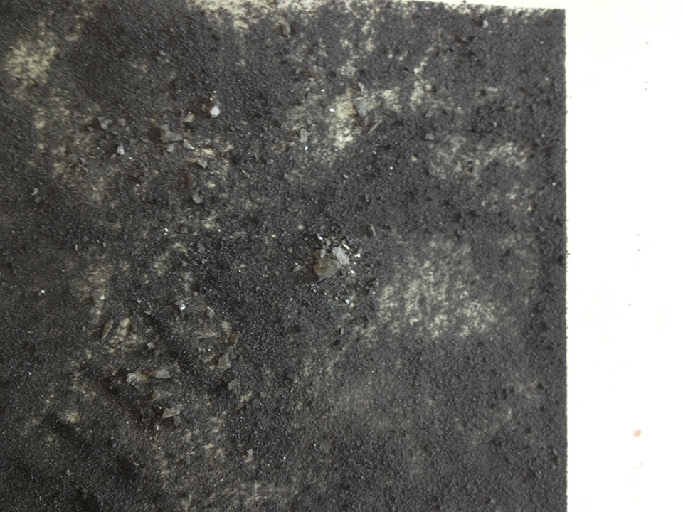
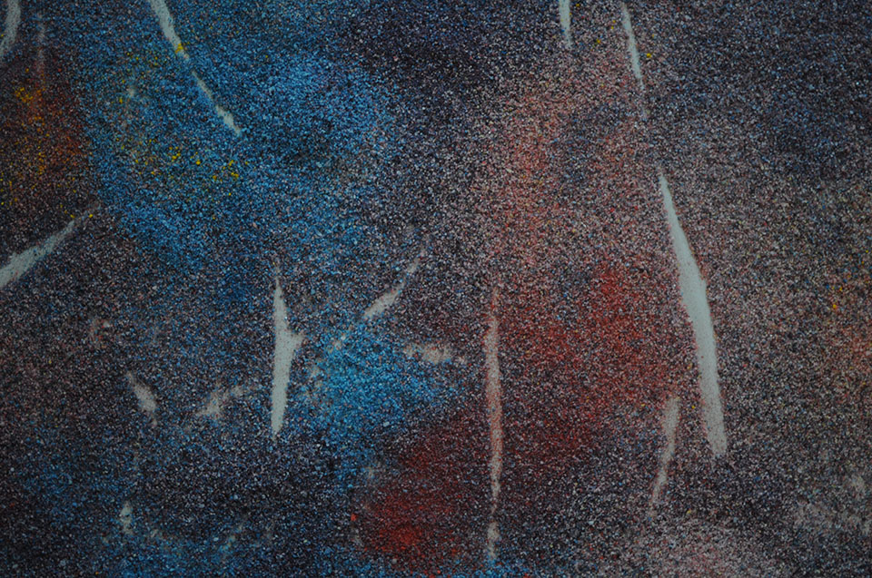
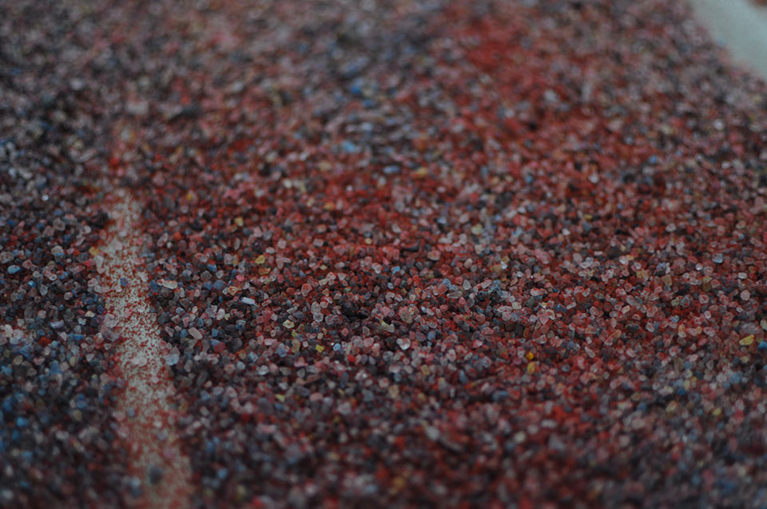
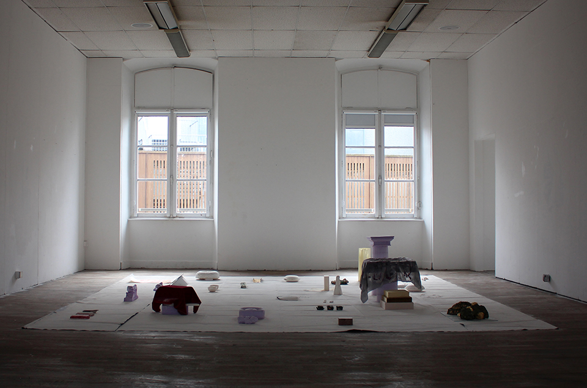
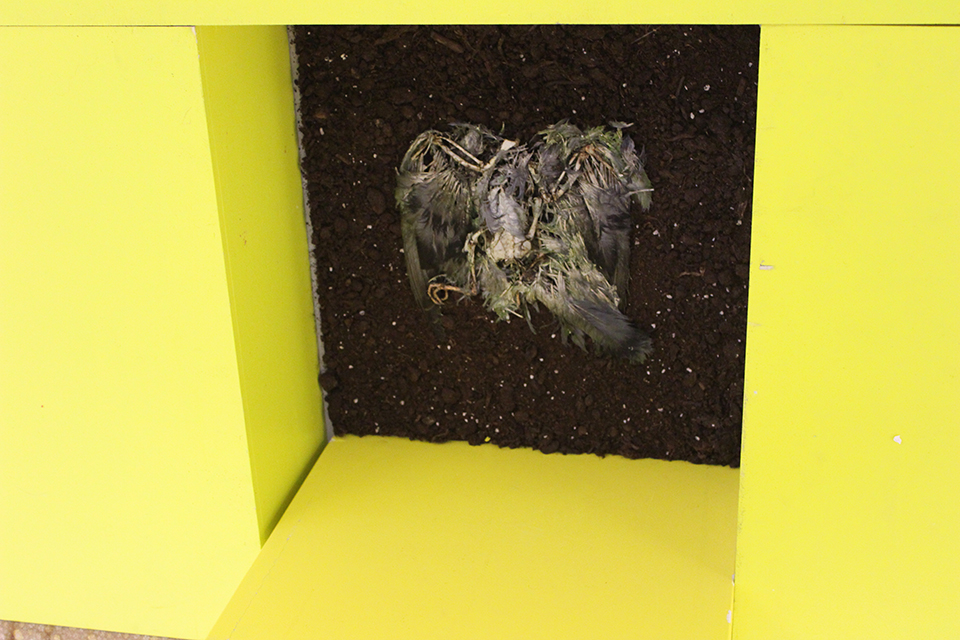

* Etendue n°5
* Etendue n°5 Colored salts
&
* Le chercheur d'or (The gold digger)
Fresh flowers, plaster, textiles, golden flakes phial, text prints on sheets to take away
DNSEP exhibition views, EESAB Quimper
June 2018

* Etendue n°1
Colored salts
Studio view
December 2017


* Nature morte à confettis de fêteUsed confettis, dried flower
Master degree exhibition views, EESAB Quimper
June 2018

* UntiteledColored salts
Master degree exhibition views, EESAB Quimper
June 2018


* Étendue n°2Colored salts
Details, A salmon in the river exhibition views, EESAB Quimper
December 2017

* UntiteledInstallation in the same way than a Japaneese garden
Plaster and sculptures
EESAB Quimper
Februar 2016

* Coffin for a pigeon
Detail of an installation
Soil, pigeon carcass, yellow pedestrals
EESAB Quimper
December 2015